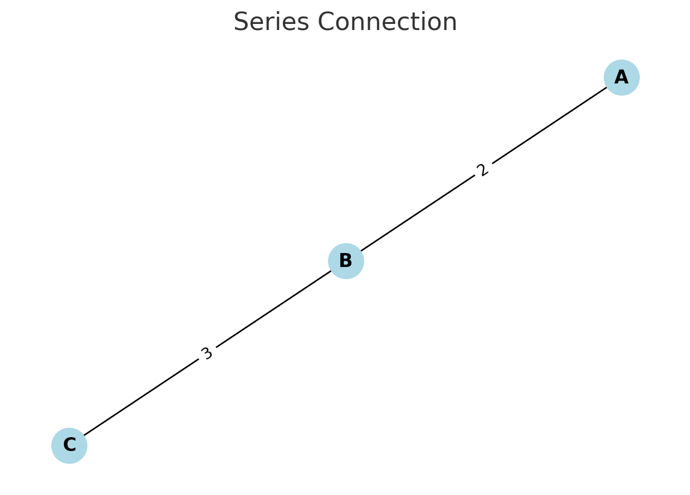
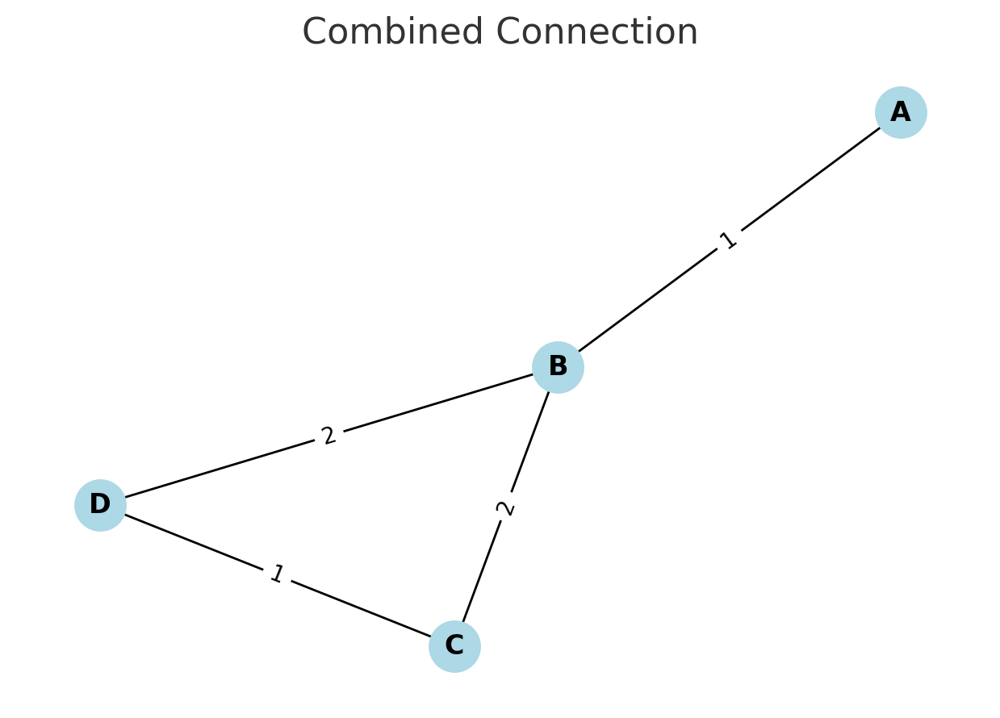
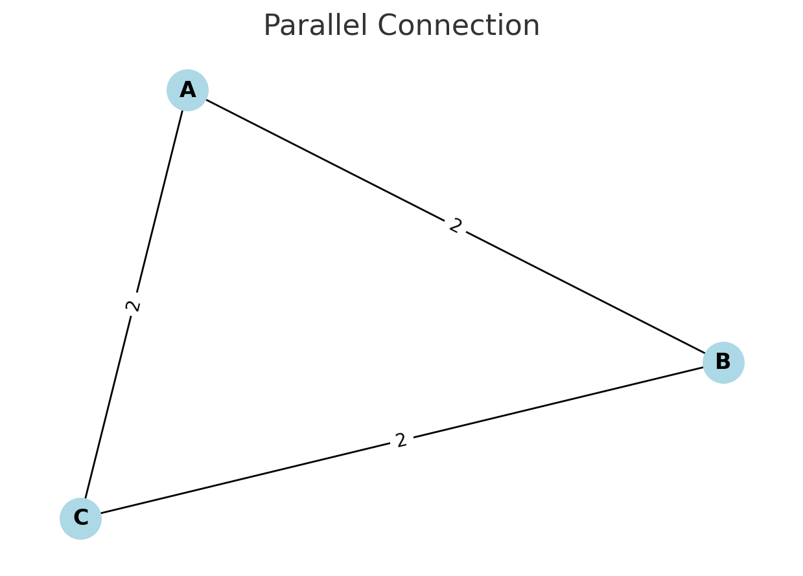

Problem 1 - Equivalent Resistance Using Graph Theory
Motivation
Calculating the equivalent resistance is a fundamental task in electrical circuits. While manual methods like series-parallel reduction work for small circuits, they become impractical for complex networks. Graph theory offers a powerful and systematic alternative.
By modeling the circuit as a graph: - Nodes represent junctions - Edges represent resistors, with edge weights as resistance values
We can iteratively reduce the graph until only a single equivalent resistance remains between the input and output nodes.
Algorithm Overview
-
Input: A weighted graph representing the circuit.
-
Repeat until no further simplification is possible:
-
Parallel reduction: If multiple edges exist between two nodes, replace them with a single edge using:
$$ R_{\text{eq}} = \left( \sum_i \frac{1}{R_i} \right)^{-1} $$
-
Series reduction: If a node connects to exactly two others (and is not input/output), merge it using:
$$ R_{\text{eq}} = R_1 + R_2 $$
-
Output: The final resistance between the input and output node.
Pseudocode
function calculate_equivalent_resistance(graph):
while graph can be simplified:
for each pair of nodes (u, v):
if multiple edges exist between (u, v): # Parallel
R_parallel = 1 / sum(1 / R for each edge between u and v)
remove all edges between u and v
add edge (u, v) with R_parallel
for each node n in graph:
if degree(n) == 2 and n is not input/output: # Series
neighbors = [a, b]
R1 = resistance between a and n
R2 = resistance between n and b
R_total = R1 + R2
remove node n and its edges
add edge (a, b) with R_total
return resistance of the only remaining edge
Test Examples
1. Series connection

- Nodes: A — B — C
- Edges: A–B: 2Ω, B–C: 3Ω
Expected result:
2. Parallel connection

- Nodes: A, B
- Edges: A–B: 4Ω, A–B: 6Ω
Expected result:
3. Nested configuration

- A–B: 2Ω
- B–C: 4Ω, 4Ω (parallel)
- C–D: 1Ω
Reduction steps:
- B–C in parallel → 2Ω
- A–B–C–D in series → 2Ω + 2Ω + 1Ω = 5Ω
Advantages of Graph-Based Approach
- Works for arbitrary topologies
- Suitable for automation with tools like Python and
networkx - Efficient for large, nested, or cyclic circuits
Conclusion
Using graph theory to calculate equivalent resistance simplifies and generalizes the process. It enables automated reasoning, handles arbitrary complexity, and lays the foundation for scalable simulation tools in physics, electrical engineering, and computer science.